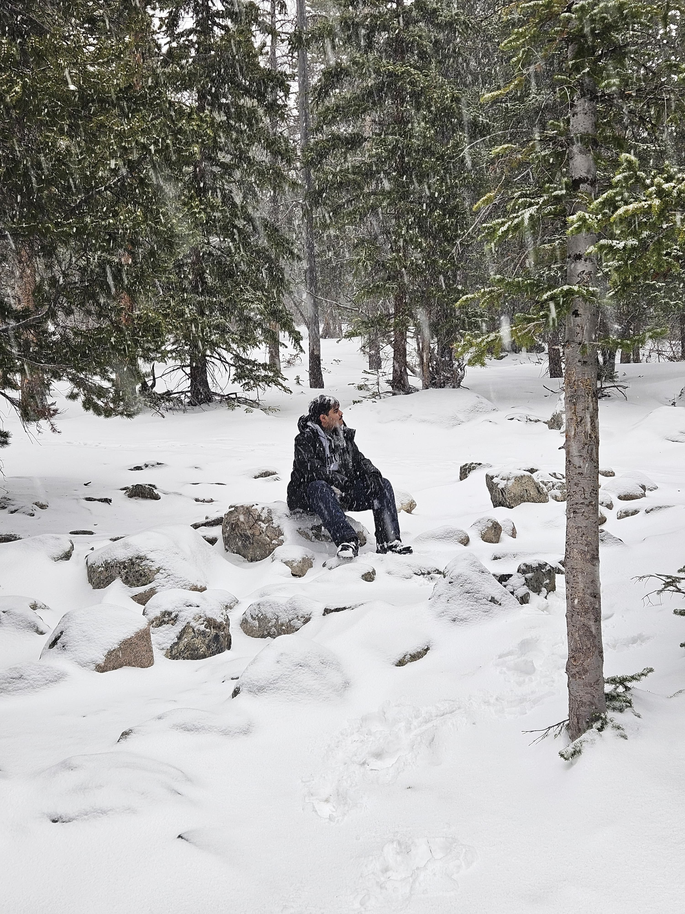

Project Engineering Co-op
USG Corporation · Baltimore, MD


I'm a Mechanical Engineering student at Illinois Institute of Technology planning to graduate December 2027. I'm passionate about robotics and aerospace. Specifically, my long-term goal is to contribute to technologies that advance space exploration and medical aid through robotics. I'm always looking for opportunities that push me to become a better engineer!
I'm currently completing a Project Engineering Co-op with USG, where I manage multiple capital and infrastructure projects from planning to execution. The role has given me firsthand experience working alongside contractors, operators, and plant leadership while learning what it takes to bring large engineering projects to life.
Outside of work and school, I spend a lot of time building things simply because I enjoy it. When I'm not engineering, you'll probably find me in the gym, out for a run, playing tennis or chess, reading, cooking, or playing competitive games with friends; I was even a Illinois Tech esports captain. To this day I'm still discovering new hobbies that I hadn't ever thought I would grow an interest in.
More experiences and details on my LinkedIn!
USG Corporation · Baltimore, MD
Project C.U.R.E. · Chicago, IL

Illinois Tech · Chicago, IL

Project: VISION! · Chicago, IL

I'm actively looking for internship and co-op opportunities in mechanical engineering. Whether you have a question, a project, or just want to connect — feel free to reach out.


{kind=link}